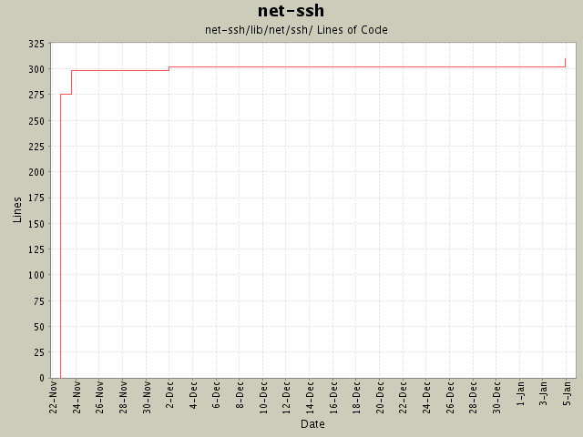

Summary Period: 2004-11-22 to 2005-01-04
[root]/net-ssh/lib/net/ssh
 connection
(5 files, 963 lines)
connection
(5 files, 963 lines)
 proxy
(4 files, 403 lines)
proxy
(4 files, 403 lines)
 service
(1 files, 56 lines)
service
(1 files, 56 lines)
 forward
(4 files, 550 lines)
forward
(4 files, 550 lines)
 process
(4 files, 572 lines)
process
(4 files, 572 lines)
 transport
(8 files, 1166 lines)
transport
(8 files, 1166 lines)
 compress
(7 files, 364 lines)
compress
(7 files, 364 lines)
 kex
(3 files, 397 lines)
kex
(3 files, 397 lines)
 ossl
(7 files, 624 lines)
ossl
(7 files, 624 lines)
 hmac
(7 files, 355 lines)
hmac
(7 files, 355 lines)
 userauth
(6 files, 1011 lines)
userauth
(6 files, 1011 lines)
 methods
(4 files, 389 lines)
methods
(4 files, 389 lines)
 util
(3 files, 493 lines)
util
(3 files, 493 lines)

Total Lines Of Code:
310 (2005-01-07 15:12)
| Author | Changes | Lines of Code | Lines per Change |
|---|---|---|---|
| minam | 9 (100.0%) | 313 (100.0%) | 34.7 |
Added "host" and "options" attributes to Session (thanks to Daniel Hobe).
8 lines of code changed in:
Pageant support! Fixed documentation. Bumped version to 0.6.0. Added
support for external services. The USERNAME environment variable is used if
USER is not set. Moved the README to the project root (for consistency with
other project files). Fixed some documentation typos.
6 lines of code changed in:
Added a prompter implementation, instead of depending on ruby-password.
5 lines of code changed in:
:verbose and :log options were not being removed from the options before being
passed to the transport layer, which was causing the transport layer to fail.
1 lines of code changed in:
Added examples. Made it easier to customize logging in Net::SSH::Session.
18 lines of code changed in:
Initial revision
275 lines of code changed in:
Generated by StatCVS 0.2.3